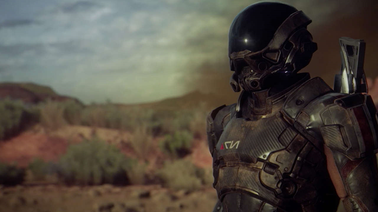

The original Mass Effect trilogy featured plenty of planet-hopping and a diverse selection of playable locations, but its story still revolved around Earth. In Mass Effect: Andromeda, this is no longer the case.
Last year, a Reddit user revealed they took part in a survey for the then-untitled fourth Mass Effect game. According to the survey, Andromeda takes place after the events of Commander Shepard’s defense of Earth against the Reapers, at a time when humanity has begun searching for a new planet to call home. Andromeda will follow a new hero named Ryder, according to a tweet from BioWare producer Michael Gamble. Referred to as the “pathfinder,” Ryder is reportedly a novice explorer tasked with venturing into the Andromeda galaxy’s Helius cluster to locate a suitable planet for humanity.
Speaking to Polygon in June, BioWare creative director Mac Walters referred to the original Mass Effect trilogy as a “foundational background” for Andromeda, with “returning species and themes,” but the game would take time to explain these components to newer players, making Ryder’s adventure a good starting point for first-time players.
With the power of a new console generation, it appears that Mass Effect: Andromeda will be substantially larger than Mass Effect 3. According to the same survey cited on Reddit, the game world will be more than four times the size of its predecessor, and feature “hundreds of solar systems that are seamlessly connected,” allowing players to fly through space, drive the Mako land vehicle, and venture on foot without noticeable load times. This was later confirmed, at least in part, by studio producer Aaryn Flynn, who told Game Informer back in June that the game would be moving to an open world structure. The same interview also confirmed the name of Ryder’s new ship: the Tempest.